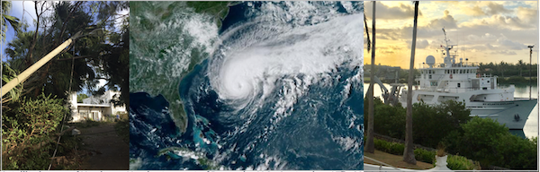
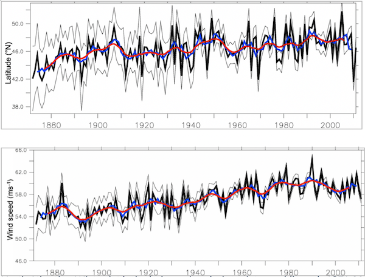

As a sailor, windsurfer, and diver I have been interested in air-sea interactions for many years. Following a BSC in Environmental Science at UEA, an MRes in Ocean Science, I undertook a PhD at the University of Southampton, looking at the impact of Atlantic Ocean variability on tropical cyclones and the northern hemisphere jet stream. Part of the research highlighted that on interannual timescales a slowdown in the Atlantic Meridional Overturning Circulation (AMOC) can cause active hurricane seasons in the Atlantic (Hallam et al. 2019).
During 2019, as part of my PhD, I was fortunate to undertake an internship at the Bermuda Institute of Ocean Sciences looking at how tropical cyclone intensity predictions can be improved using ocean heat content (Hallam et al. 2021). During my first week Hurricane Humberto brought winds over 100mph to Bermuda, causing significant damage and power outage to over 80% of the island. The first-hand experience of a major hurricane emphasised the importance of the research.
Satellite image of Hurricane Humberto, west of Bermuda, U.S., September 17th, 2019. Photo courtesy: NOAA/Handout via Reuters
North Atlantic – Winter jet latitude (upper) and winter jet speed (lower) 1871-2011 (Hallam et al. 2022)
In February 2021 it was a delight to join the ICARUS team at Maynooth University as post-doctoral researcher, working on the EU funded ROADMAP project investigating the impact of ocean circulation variability (western boundary currents and AMOC) on atmospheric and climate dynamics in the North Atlantic and North Pacific. Initial results indicate that the jet latitude meridional range is at a minimum in winter along the western boundary of the North Pacific and North Atlantic, where the SST gradients are strongest. Also, during the period 1871-2011, the winter jet latitude in the North Atlantic has migrated 3 degrees poleward and an increase in jet speed of 10mph is observed, both have implications for European Weather (Hallam et al. 2022).
Hallam, S., M. Guishard, S. A. Josey, P. Hyder & J. Hirschi (2021) Increasing tropical cyclone intensity and potential intensity in the subtropical Atlantic around Bermuda from an ocean heat content perspective 1955–2019. Environmental Research Letters, 16, 034052.
Hallam, S., S. A. Josey, G. D. McCarthy & J. J. M. Hirschi (2022) A regional (land–ocean) comparison of the seasonal to decadal variability of the Northern Hemisphere jet stream 1871–2011. Climate Dynamics.
Hallam, S., R. Marsh, S. A. Josey, P. Hyder, B. Moat & J. J. M. Hirschi (2019) Ocean precursors to the extreme Atlantic 2017 hurricane season. Nature Communications, 10, 896.